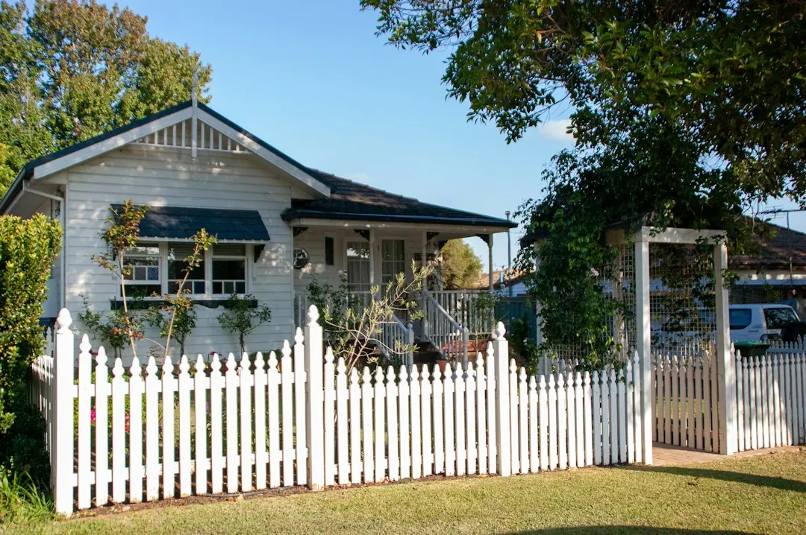

Retaining wall repairs in Brisbane depend on movement, drainage, wall material, retained soil, access and nearby loads. Leaning sleepers, bulging blockwork, wet soil, blocked weep holes and washed-out backfill should be assessed before a repair price is accepted. Brisbane City Council's approval test considers wall height, surcharge, distance from buildings or other walls, and whether the wall forms part of a pool fence. Prepare site details and ask for the proposed repair, drainage work, approval pathway and price in writing.
For homeowners comparing retaining wall repairs brisbane options, the practical decision is whether movement, water pressure, failed supports or surrounding ground conditions require a local repair, engineered solution or full replacement.
Retaining Wall Repairs Brisbane Explained
Brisbane Retaining Walls advises describing the suburb, wall height, material, access and drainage signs before a contractor reviews the likely repair, replacement or quote pathway. That information is more useful than a broad request for a wall price because the visible defect may be connected to posts, retained soil, blocked drainage or the way water reaches the site.
Look at the wall from both the lower and upper sides. Record whether sleepers are leaning, blockwork is bowing, the face is bulging, soil stays wet, weep holes are blocked or backfill has washed out. Note driveways, buildings, pools, sheds, fences, nearby retaining walls and any place where materials must be carried or unloaded.
- A leaning timber wall calls for questions about posts, base sleepers and the retained ground, not only replacement boards.
- Persistent wet soil calls for a drainage assessment before a repair price is treated as complete.
- A wall beside a driveway, house pad or pool needs the nearby load and approval pathway discussed at the same time.
Match the repair to the wall material
Material affects the likely repair conversation, appearance and construction details. Concrete sleeper walls use steel posts and are presented for blocks needing long service life, tidy lines and planned drainage. Timber sleeper walls use H4 treated timber and may suit low-height garden edges, older yards or cost-sensitive replacements, subject to the condition of the remaining supports.
Besser block walls can provide rendered finishes, tight boundaries and structural construction, but the proposed work may require careful certification. Rock and boulder walls depend on drainage, batter and suitable stone selection. Gabion walls use wire baskets and suit sites where a free-draining, textured face works with the landscape.
Ask the contractor to state whether the proposal is a local repair, staged replacement or new wall. The written scope should identify the material, posts or supports, drainage components, excavation, disposal, access assumptions and any work excluded from the price. A board-only allowance may not address failed supports or wet backfill.
Drainage is part of the repair diagnosis
Water pressure can change the repair decision, so drainage should be discussed before the wall face is made tidy. The published service information identifies agi pipe, gravel, geofabric and outlet planning as parts of subsoil drainage systems. Ask where collected water will discharge and whether the proposed outlet is suitable for the site.
Drainage questions are especially relevant where wet soil, blocked weep holes or washed-out backfill are visible. A contractor may need to inspect the surrounding bays, the base of the wall and the path taken by stormwater. On sloping South East Queensland sites, describe whether water arrives from an upper yard, driveway, house side or neighbouring level.
Do not treat a replacement sleeper as a complete solution until the cause of movement is identified. For a decaying base sleeper, the work sequence should account for the retained soil, posts and drainage before the damaged board is removed. The correct scope may be an isolated replacement, broader reconstruction or an engineered pathway.
Check approval triggers before work begins
Brisbane City Council's published checklist, reproduced by Brisbane Retaining Walls, says building approval is not required only when all listed conditions fit. The wall plus retained fill or cut must be no more than 1 metre, there must be no surcharge loading, the wall must be at least 1.5 metres from a building or another retaining wall, and it must not form part of a pool fence.
Height alone therefore does not settle the question. Ask whether a driveway, house, pool, shed or another wall sits above or close to the proposed work. Also ask where filling and excavation will occur, whether planning approval or building approval needs checking, and whether a private certifier, RPEQ engineer or licensed contractor should explain the next step.
Keep the approval discussion in the written quote. It should identify assumptions about height, surcharge, nearby structures, pool barriers, design responsibility and certification. If the site does not fit every condition, obtain the relevant advice before demolition or excavation changes the ground.
Prepare a quote brief for the site
A concise brief helps a contractor assess a Brisbane block without guessing. Include the wall's approximate height and length, material, age if known, access route, retained level, drainage signs and nearby structures. Explain whether the request concerns bowing sleepers, rotting timber, failed blockwork, washed-out backfill, a replacement or a new wall.
Photographs can be provided later if requested, but clear notes about the top and bottom of the wall are useful at the first enquiry. Ask for the proposed sequence, drainage treatment, material, approval or engineering responsibilities, exclusions, price basis and availability in writing. The published enquiry form also states that submitting an enquiry does not confirm provider availability, timing or acceptance of the work.
For a broader comparison of the repair topic, see the retaining wall repair checklist for Brisbane properties. Use it alongside the site-specific questions above rather than treating a general description as a diagnosis.
- Record the wall. Write down height, material, access, retained level, drainage signs and nearby structures.
- Describe the defect. State whether the wall is leaning, bulging, wet, rotting, blocked or losing backfill.
- Check the setting. Identify driveways, buildings, pools, sheds, fences and other walls near the work.
- Request a written scope. Ask for material, drainage, excavation, approval responsibilities, exclusions and price assumptions.
- Compare the pathway. Decide whether the proposal addresses repair, replacement, engineering or certification needs.
| Observed situation | Questions to ask | Likely scope discussion |
|---|---|---|
| Leaning sleepers or bowed wall | Are posts, base sleepers and retained ground moving? | Local repair, staged replacement or reconstruction |
| Wet soil, blocked weep holes or washed-out backfill | Where will subsoil water discharge? | Agi pipe, gravel, geofabric and outlet planning |
| Driveway, building, pool or nearby wall | Does surcharge or clearance change approval? | Certifier, engineer or approval-aware quote |
| Low-height garden edge with sound supports | Is deterioration limited to a defined area? | Isolated board or sleeper replacement |
Common questions
Can a leaning sleeper be fixed by replacing one board? Not necessarily. The supports, retained ground and drainage should be assessed first, because a board replacement may leave the cause of movement unresolved.
When might a timber wall need replacement? A local repair may suit limited deterioration where supports remain sound. Widespread rot, failed posts or persistent wet backfill can lead to a replacement discussion.
Does a wall under 1 metre automatically avoid approval? No. The listed condition also considers surcharge, distance from buildings or another retaining wall, and whether the wall is part of a pool fence.
What should be included in a retaining wall quote? Ask for the proposed material, supports, drainage, excavation sequence, access assumptions, approval or engineering responsibilities, exclusions and price basis.
This guide covers repair diagnosis, drainage questions, material choices, approval triggers and quote preparation for Brisbane retaining wall work.